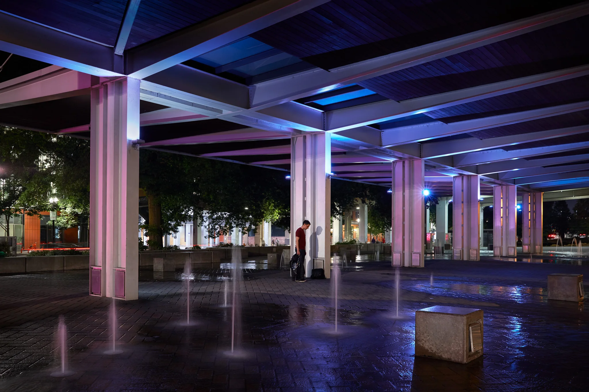

6-Month Reflections
It’s unofficially been 6 months since I made the move to Portland. Although my move in date was December, I’ve been working here since August. Here are some things I’ve learned during my stay here networking with other photographers and working as a commercial photo assistant.

Realization #1 - You’ll never know everything, just be good at using your tools
I didn’t realize how much I didn’t know, and it’s been a humbling experience learning how all of the pieces move together to create a final image in studio. I never valued being an assistant enough; I figured that if I went to school, and picked a few video workshops I could learn enough to work my way to the top of the industry, or at least the middle. There’s always something to learn.
Realization #2 - Different doesn’t mean functional.
If you’re creating photos as a photographer solely based on what’s out there already, you’re sabotaging yourself if your only goal is to be different. Just because something hasn’t been done, doesn’t mean it’s exciting; that’s not enough. Be contemplative, and curious, look for inspiration in the every day, and be observant. Be a part of the culture around you, and engage your experiences in the creation of your artwork. Develop the narratives you want to tell as an artist over time, not just in the moment, or with a week of prep. Take notes.
Realization #3 – Don’t get comfortable, and be thankful for what you have.
I’ve been busy, but the photography market in Portland appears to be slow. From what I know about the industry here, many photographers depend on agencies and studios for work, so it’s hard to know when that work is going to come, and how much of it will be there.
There are advantages to starting with small businesses and building a diverse client base from scratch. I view building a client base almost like stocks. Build small and invest in small operations that look promising, while eating part of your fee if you have to. Do this with a lot of small businesses, and do photo work in different industries. My theory is that you treat your client base like the S&P 500. If one industry goes down, another one might keep you afloat. Specialization has its place, but to survive in a competitive market, diversification might be essential. If work becomes scarce, you need to find ways to make new work, and grow it over time.